Tecnologia com coração: pessoas cuidando de pessoas
Saúde mental em cada passo
Antes de ser um sistema, o Vivamente é um jeito de cuidar. Ele aproxima quem precisa de ajuda de quem pode ajudar: no celular do paciente e na central de quem cuida, em tempo real. Voltado para clínicas psiquiátricas, pais, filhos e responsáveis que acompanham alguém com risco de suicídio.
O Vivamente apoia o tratamento e não garante a prevenção do suicídio: nada garante. Veja o Termo de consentimento.
conta como está ou pede ajuda
recebe, compara e entende o momento
acolhe com cuidado e encaminha
Feito para quem cuida de quem mais precisa
O Vivamente é voltado para clínicas psiquiátricas, pais, filhos e responsáveis que querem acompanhar a saúde mental de alguém com risco de suicídio.
A equipe acompanha todos os pacientes em uma central, com alertas ao vivo.
Acompanhar de perto o filho ou a filha, com check-ins diários e ajuda a um toque.
Cuidar de um pai, de uma mãe ou de um familiar que passa por sofrimento.
Quem responde por alguém e precisa saber quando algo mudou, sem esperar a crise.
Sempre com o consentimento da pessoa acompanhada (ou do responsável legal), conforme a LGPD.
Em emergência: CVV 188 (24 h, gratuito) · SAMU 192.
Simples, acolhedor, no ritmo do paciente
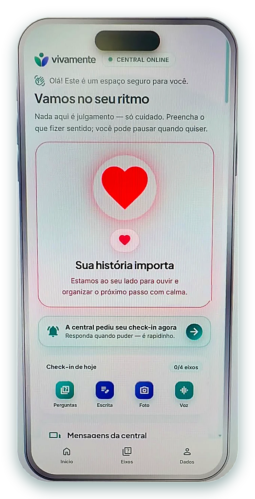
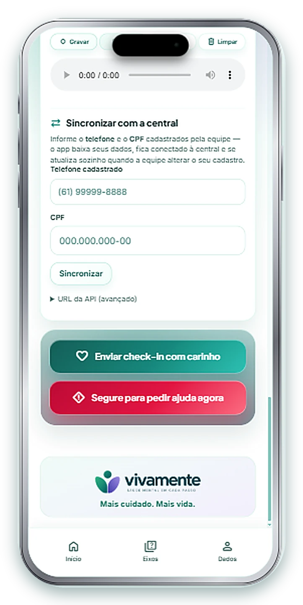
“Vamos no seu ritmo”: nada de julgamento, só cuidado. Quando a central pede um check-in, o aviso aparece na hora.
O check-in e o botão de ajuda ficam sempre à mão, em um menu simples: Início, Eixos e Dados.
Um momento por dia para se ouvir
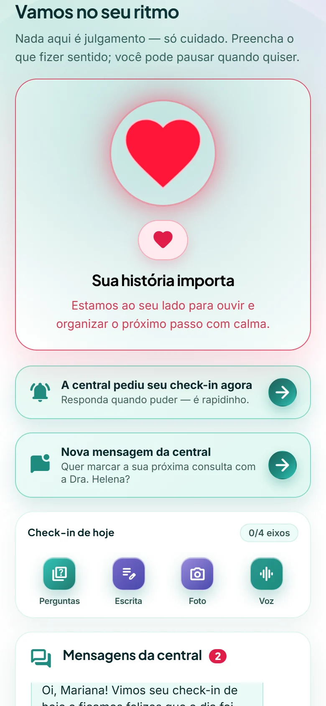
O paciente conta como está hoje em 4 eixos:
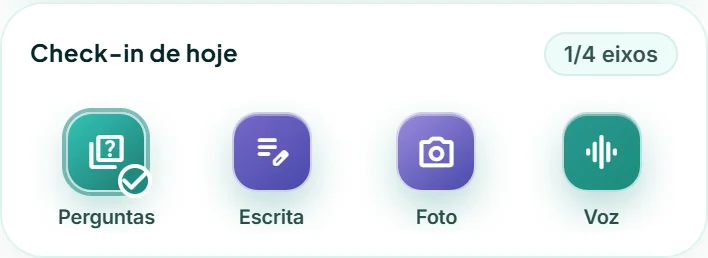
Palavras acolhedoras, sem “certo ou errado”. O paciente pode pausar quando quiser.
A referência de cada paciente
Cada pessoa é única. Por isso a clínica registra como o paciente é quando está bem: respostas, um texto, uma foto e a voz. Ninguém é comparado com ninguém — só com ele mesmo.
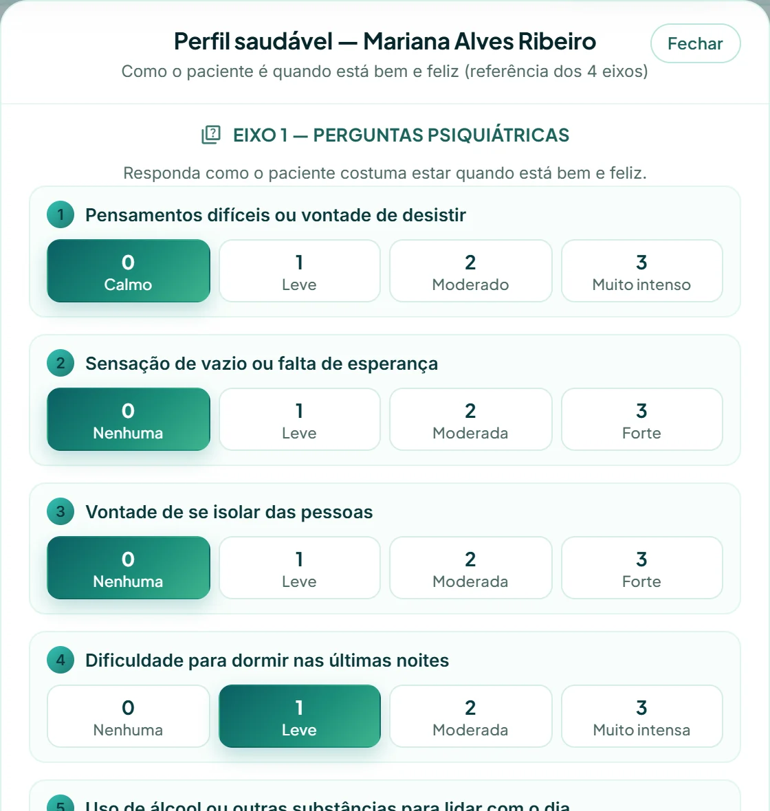
Perguntas · Escrita · Foto · Voz
Sem perfil saudável não há base para comparar — o app orienta a procurar a equipe.
Perceber cedo quando algo mudou
É o check-in: perguntas, escrita, foto e voz.
Eixo a eixo, mostrando o que mudou.
Com o motivo, para acolher e agir com segurança.
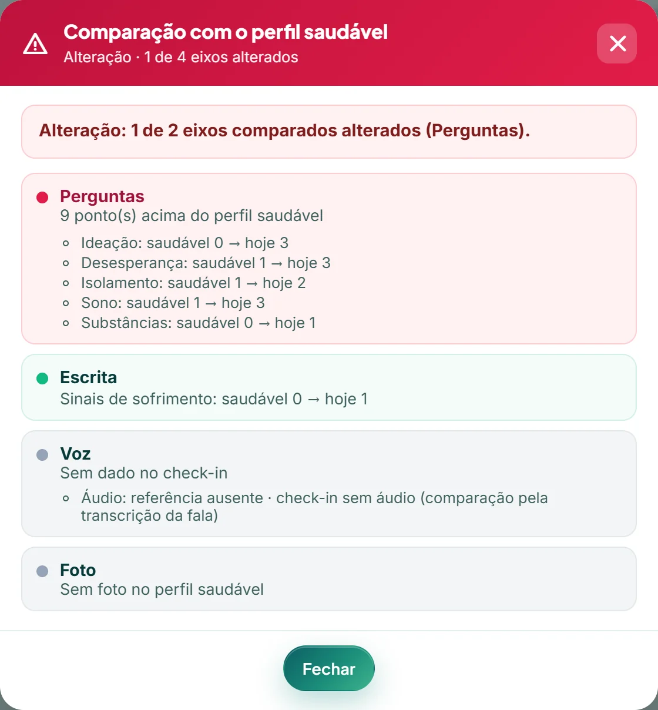
Apoio à decisão clínica: a avaliação final é sempre da equipe.
Você não está sozinho(a)
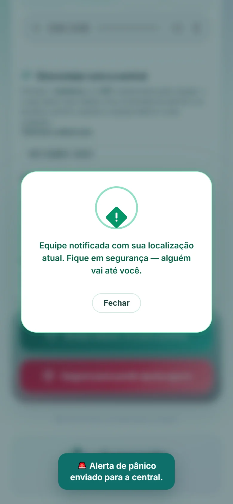
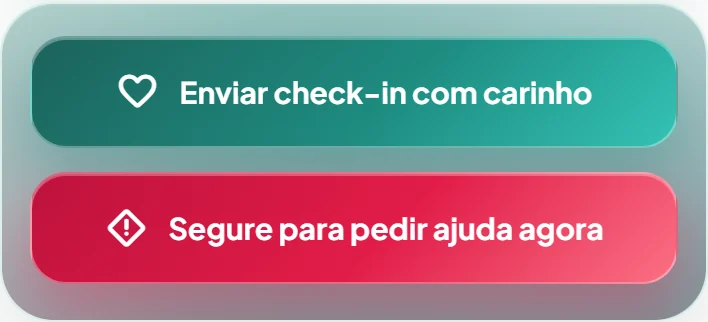
Entra na fila de prioridade com a mensagem do paciente.
O GPS vai junto com o alerta: a equipe sabe onde ir.
“Equipe notificada. Fique em segurança — alguém vai até você.”
Para chegar até quem precisa, onde estiver
Com um toque em “Localizar paciente agora”, a central pede ao celular a posição atual. A resposta traz o ponto, a precisão e a hora — e abre direto no Google Maps.
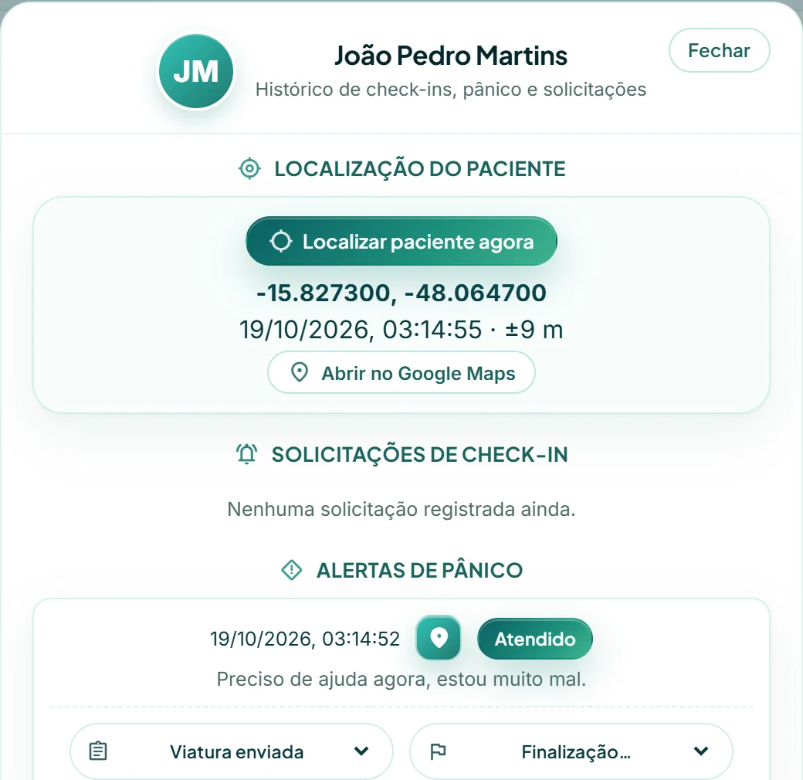
O ponto de GPS fica registrado no histórico de cada alerta.
Depende do GPS ativo e da permissão do paciente (LGPD).
A equipe cuidando, em tempo real
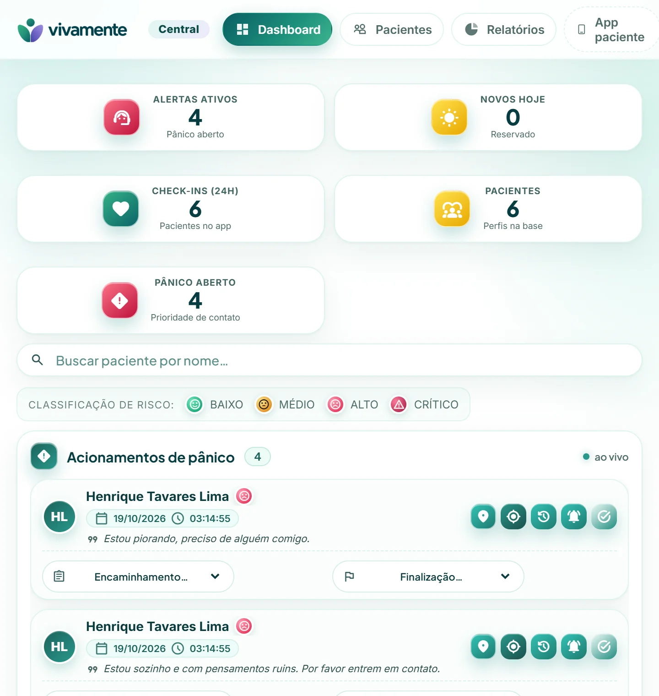
Atualiza sozinho, sem precisar recarregar.
Baixo, médio, alto ou crítico — a equipe vê quem priorizar.
Cada acionamento é registrado até o desfecho.
Uma palavra amiga, em segundos
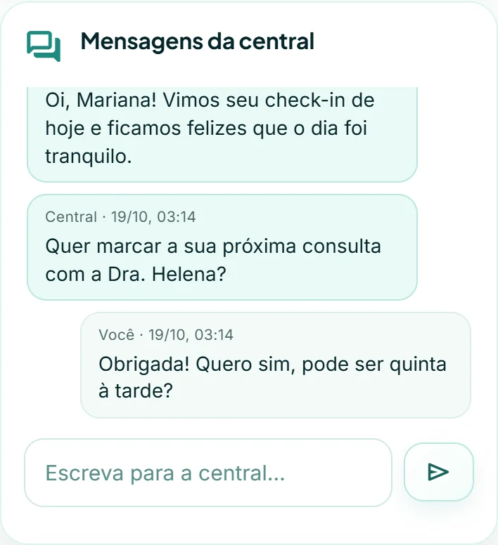
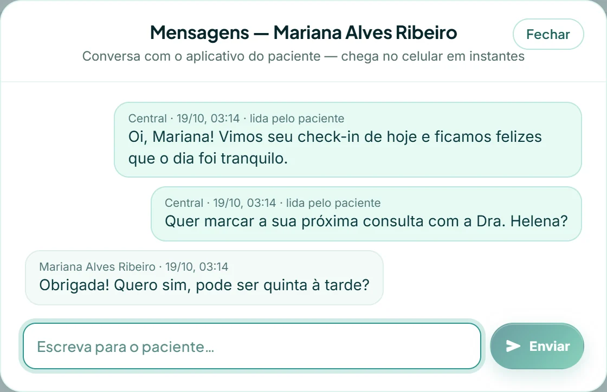
A equipe escreve na central e o aviso aparece no celular do paciente.
A central vê quando o paciente leu a mensagem.
Cuidar da pessoa e dos dados dela
Foto, voz e localização só com a autorização do paciente.
O sistema organiza sinais; quem decide é a equipe clínica.
Acessos e ações ficam auditáveis.
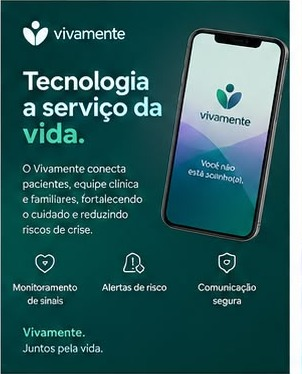
Ciência e autorização do paciente
O Vivamente é um aplicativo de apoio ao tratamento. Ele não garante que o suicídio não ocorra — nada garante. Não substitui o acompanhamento profissional nem os serviços de emergência.
Autoriza, por escrito, o uso das suas imagens, voz, localização (GPS) e dados de saúde, conforme ciente do documento. Pode revogar a qualquer momento.
No sistema, o termo sai do cadastro do paciente, já preenchido, pronto para imprimir e assinar.
Vivamente · registro no INPI
O Vivamente está registrado no Instituto Nacional da Propriedade Industrial (INPI) em nome de Rafael Gadelha.
É proibida qualquer cópia, reprodução, distribuição ou uso não autorizado da propriedade intelectual e do programa de computador Vivamente: código, telas, marca, textos e imagens.
Lei nº 9.609/1998 (programa de computador), Lei nº 9.610/1998 (direitos autorais) e Lei nº 9.279/1996 (propriedade industrial). O uso indevido sujeita o infrator a sanções civis e penais.
© 2026 Rafael Gadelha
Todos os direitos reservados.